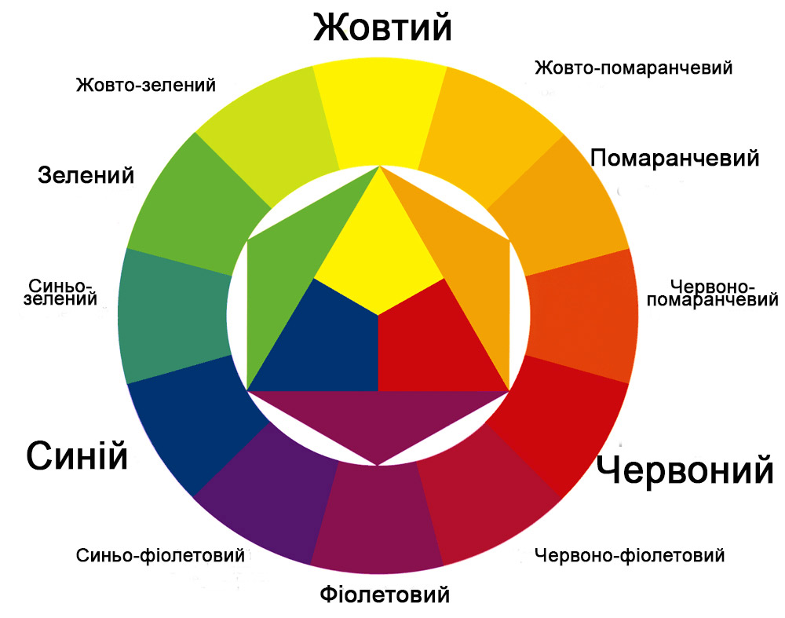

Welcome to Кольори
Ко́лір (у контексті теми також ба́рва) — суб'єктивна характеристика сприйняття світлової хвилі, яка ґрунтується на здатності людського зору розрізняти електромагнітне випромінювання з довжиною хвиль у межах видимого діапазону (видимий діапазон — довжини хвиль від 380 до 760 нм). Сприйнятий колір (випромінення або об'єкта) залежить від його спектру та від психофізіологічного стану людини.Розрізняють спектральні і неспектральні кольори (наприклад, пурпурний або брунатний колір), а також ахроматичні кольори (білий, сірий, чорний).  Феномен кольору цікавив людство здавна. Люди намагалися пояснити це явище, з'ясувати його вплив на мозок та психіку. Спроби розробити теорію кольору сягають ще часів Платона й Аристотеля. Питаннями кольористики переймалися такі вчені, як Леонардо да Вінчі, І. Ньютон, Г. Гегель. Значущість в аспекті дослідження кольору, являє трактат Й. В. Гете «Вчення про колір» (1810)[1], у якому дослідник розкриває «чуттєво-моральну дію» кольору на людину. Колір став предметом вивчення низки дисциплін, галузей наук та технологій: психофізики, психофізіології, психології сприйняття, оптики, анатомії ока, колориметрії, світлотехніки, теорії фотографії, поліграфії, хімії барвників тощо. Зроблений перелік знаменує практичну значущість проблематики, пов'язаної з кольором, що зростає з появою нових засобів його відтворення й нових способів використання. Колір є психологічним, емоційним, культурним чинником, і за його допомогою у мистецтві передається емоційний стан людини, її риси характеру, різні соціальні та культурні явища, а також менталітет, соціальні та культурні риси життя народу.